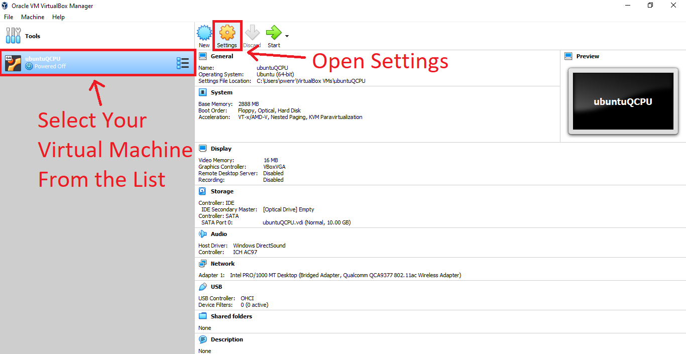

⚠️ IMPORTANT: In order for the QCPU webserver to work properly on a virtual machine, you will need to change some of the machine’s network settings. To do this in Oracle Virtualbox, select your virtual machine from the list of avilable machines, and open the settings menu by clicking the settings icon:  Next, navigate to the network settings tab. Under the Network Adapter drop-down menu, choose "Bridged Adapter". Once you have done this, click the OK button to save the settings and exit: Once this setting is changed, you can continue setting up a QCPU on the virtual machine.